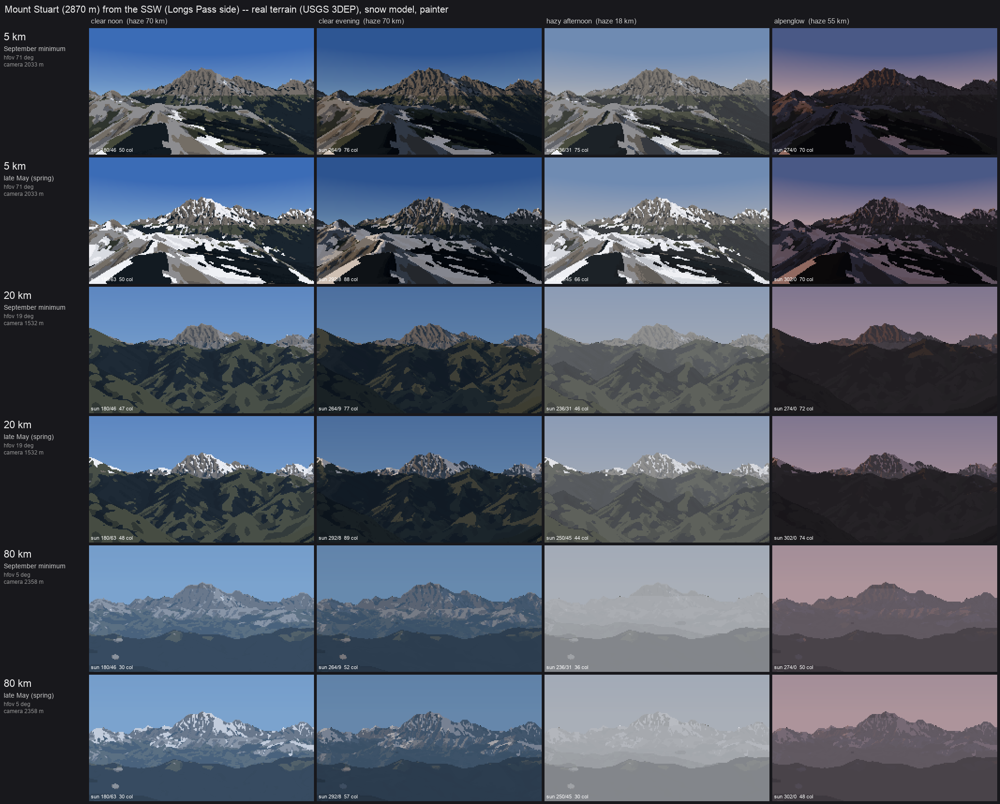

How-to 5: sheets, vocabulary, and what isn't there yet
Snow-peak student. Code: src/sheets.py, src/vocab.py. Story: POST.md §15–16.
A photo-matched pair proves the method on one view. The brief wanted the peaks at 5, 20 and 80 km, through the seasons and the hours. With the terrain and the snow model real, a new view is just a new camera, but choosing the camera turned out to be the hard part.

Mount Stuart from the SSW: rows 5, 20 and 80 km × September minimum and late May; columns clear noon, clear evening, hazy afternoon (visual range 18 km) and alpenglow. Every cell is the real terrain, the snow model and the painter, with no hand edits.
1. Choosing a standpoint that makes a view
A synthetic view stands dist km from the summit on the bearing of a real vantage: Seattle for Rainier (330°), Longs Pass for Stuart (200°), Hurricane Ridge for Olympus (40°), Colchuck Lake for Dragontail (345°). The frame is sized so the massif fills about the width of the picture, with the summit about 28% down from the top.
My first attempt put the camera on the highest ground near the nominal point. At 20 km a knoll filled the whole frame with one flat colour:

So I added a visibility test: cast one ray to the summit (25 m below the top) and keep the first candidate it reaches. That made it worse. The camera now stood where it could see the summit over a huge slope in front of it:

Visible isn't the same as a view: the 5 km frame is a near slope, and the 80 km frame is a hill.
The rule that fixed it is a photographer's: the foreground must fall away. Cast a second ray, aimed 0.35 of the frame height below the summit, and require it to travel at least 30% of the distance before hitting ground. Candidates are searched along the bearing first (pushing further out or in), then sideways off the bearing, up to ±35% of the distance, and each one stands on the highest cell within 3% of the distance:
for push, side in cands: # along the bearing, then off to the sides
...stand on the highest cell within min(0.03 d, 800 m)...
v = [pe - e2, pn - n2, zs - 25 - z2 - dd*dd / (2 * cam.R_EFF)] # ray to just under the summit
cam._cast(Z, ..., e2, n2, z2, v / |v|, ...) # 1-pixel cast
clear = hit < 0 or hit > |v| - max(400, 0.01 * |v|)
el0 = elevation(v) - radians(0.35 * vfov) # a ray into the lower frame
cam._cast(Z, ..., e2, n2, z2, dir(azimuth(v), el0), ...)
fg_ok = t2 < 0 or t2 * cos(el0) > 0.3 * dd # the foreground falls away
if clear and fg_ok: best = (e2, n2, z2); break
Both tests are single-ray casts, so the search over 55 candidates costs nothing next to the render.

Stuart at 20 km, after the foreground rule and the sideways search. The granite peak stands over darker forested ridges. In late May, broken snow sits on the ridges and the peak; in September only the peak's couloirs hold snow.
2. The four lights
Each column is a light_state and a sun position computed for the date:
LIGHTS = [("clear noon", 13.0, 70.0, 2000.0, None),
("clear evening", "set-60", 70.0, 2000.0, None), # an hour before local sunset
("hazy afternoon", 16.0, 18.0, 2600.0, None), # visual range 18 km, deeper haze layer
("alpenglow", "set-6", 55.0, 2000.0, (1.0, 0.62, 0.55))]
Haze changes two things: the visual range D_h in τ = exp(−deff/D_h), and the aerosol scale height H_a in the haze path. A deeper layer (2.6 km) is what makes a hazy afternoon swallow the foothills first. For alpenglow the sun is warmed and dimmed, the horizon sky goes rose, and the zenith deepens. The same index canvas is re-lit per column. Only the sun position changes the families, because cast shadows move with the sun.
3. Four peaks

Rainier from the Seattle side. The 20 and 80 km rows read best of all the sheets. At 80 km the peak is a pale shape a little lighter than the sky, over the darkest band on the horizon (the foothills), as measured in how-to 3. The 5 km rows fail: the standpoint search put the camera on the glacier itself, since at 5 km Rainier's massif surrounds you, and crevasse marks show there as isolated dots.

The Dragontail–Colchuck ridge from the north. The 20 km rows have the best snow pattern of the set: white gully threads in September, broken cover in May, both reading as structure, not noise.

Olympus from the northeast. The 5 and 20 km rows work. The 80 km rows are broken: the camera stands 3 m above sea level on the Strait shore, the peak is lost in the horizon haze, and the foreground water is painted as forest (WorldCover's water class isn't mapped to a material).
4. The close vocabulary
The brief's close scales (1 m/px and finer) call for a vocabulary of forms: gully fill, ledge bands, a cornice, a glacier edge. vocab.py builds each as a small synthetic terrain and runs it through the same snow model and painter as the real peaks, so the close rules and the far rules are one rule.
- gully: a 52° face cut by parallel gullies whose spacing halves upward (poplar branching);
- ledge: a stepped face, with 12 m of height per step split between steep risers and gentle treads;
- cornice: an east–west ridge, 28° on the windward (south) side and 50° on the lee;
- glacier: a trough with a tongue down its axis, lateral moraines, and a steepening in the middle.
The first sheet was entirely sky. The cameras stood outside the synthetic grids, and the ray caster stops at the grid edge. Padding each grid by 1.3 patch widths (edge values) fixed it. Then everything came out bare, because the patches sat at 1,800 m, below a September snowline of 2,150 m. Lifting them to 2,450 m:

Gully, ledge, cornice and glacier at 1 and 0.25 m/px, September and late spring. The cornice and glacier rows read: windward scour against lee load with a lit crest lip, and a white firn tongue between moraine ridges with crevasse arcs where it steepens. The gully rows keep almost no snow, and the 1 m ledge row shows snow as striped scanline dashes.
The gully and ledge failures have one cause, and it's the lesson of this sheet: the snow model's curvature scales are fixed in metres (a 25 m radius and 4 m depth for couloirs). That's right on 4–15 m DEMs, where a gully is a few cells wide. On a 1 m grid my synthetic gullies are too shallow for a 4 m depth scale, and at 0.25 m the 25 m radius spans the whole patch. The ledge treads are 1–2 px tall, below the dash filter's limit, so they're drawn and then half-removed. Every scale in the model and the painter should be in metres per pixel or tied to the form it detects.
5. What isn't there yet
These are the critics' findings plus my own, most important first. This is the open list if you pick this up.
- Ridge-plane values under the snow. The terrain below the snowline is one slab (Glacier Peak), faceted polygons (Rainier) or camouflage (Stuart 20 km). The photos show receding planes, each lighter and bluer, and sunlit slopes as warm mid-values. One value per occlusion layer, set from its haze path and its mean light, would fix all three. This is the highest-leverage change.
- Rock strokes. Imhof's and Ruskin's rock is drawn with structural lines. Mine is ranked value texture. Draw rib and gully lines from the curvature ridges as clean runs.
- Warm lit snow. The photos are b* +2 to +11. Mine are neutral to cold.
- The Stuart sheet's seam. There's a straight horizontal break across the frame in the 5 and 20 km rows. I suspect the edge of the snow sub-box, or the switch between the fine and coarse shadow grids. Not chased.
- Far subject clarity. In the 80 km hazy afternoon the peak nearly disappears. That's true to the 96 km dusk photo, but a painter would keep one lit step on the snow.
colour(..., subject_clear=)exists for this and is unused. - Scales in metres per pixel for the vocabulary, above.
- A painted 80 km pair against the Seattle photos, and a working Olympus fit.
- The close scale (0.1 m/px) isn't here. The snow student's loaf-and-cap grammar is the tool for that.